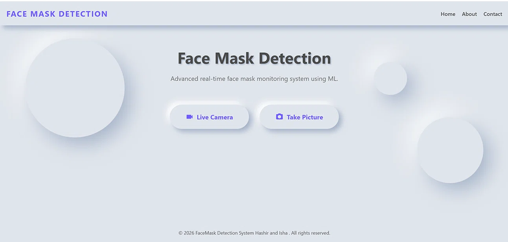

Developed and deployed a computer vision system using CNN deep learning to detect face mask compliance in real-time via live camera streams and image uploads.

Public health safety has become a global priority, yet manual monitoring of mask compliance is inefficient, subjective, and resource-intensive. To address this challenge, I developed an end-to-end AI surveillance system that automates face mask detection with remarkable accuracy and speed. I engineered a Convolutional Neural Network (CNN) using TensorFlow/Keras, training it on a diverse dataset to achieve robust performance across varied lighting conditions, angles, and ethnicities. The trained model (saved as a .h5 file) integrates seamlessly into a Django web application, providing users with two intuitive interaction modes: real-time detection via live webcam feed and image-based detection through file uploads. The responsive frontend, built with HTML, CSS, and JavaScript, delivers instant visual feedback with bounding boxes and confidence scores, ensuring users can trust the system's predictions. To enhance operational utility, I integrated a contact form that automatically dispatches user inquiries and violation reports to administrative email addresses via SMTP, enabling swift response coordination. This project demonstrates my ability to bridge deep learning research with full-stack web deployment, delivering a production-ready tool for public health infrastructure.